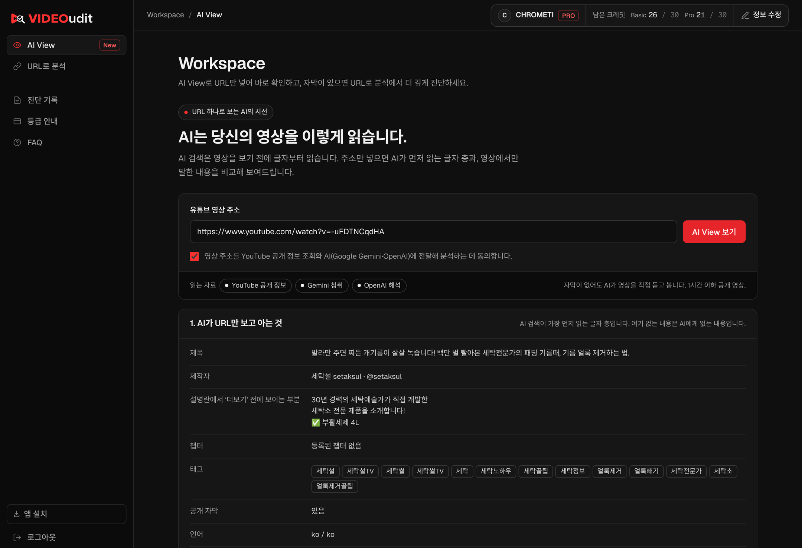
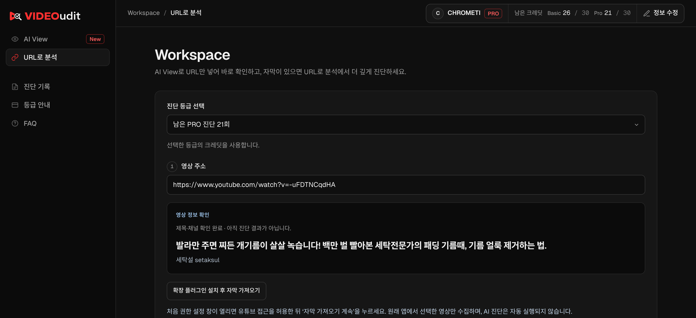
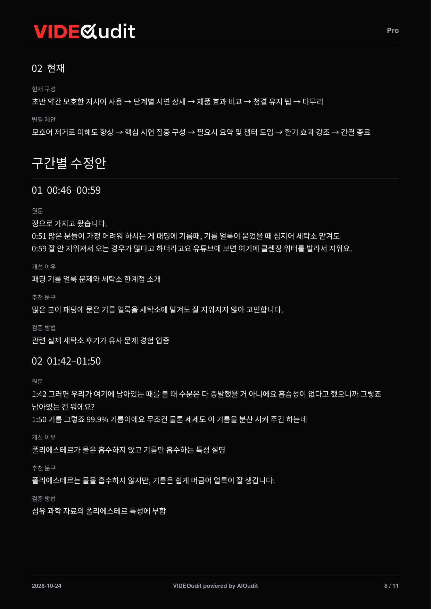
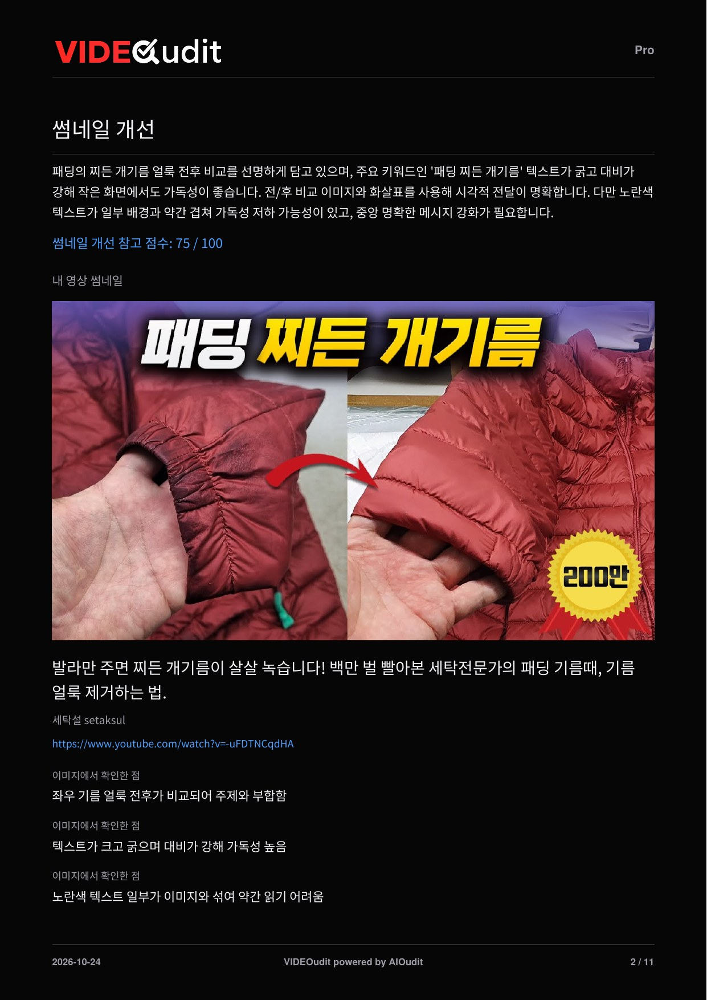
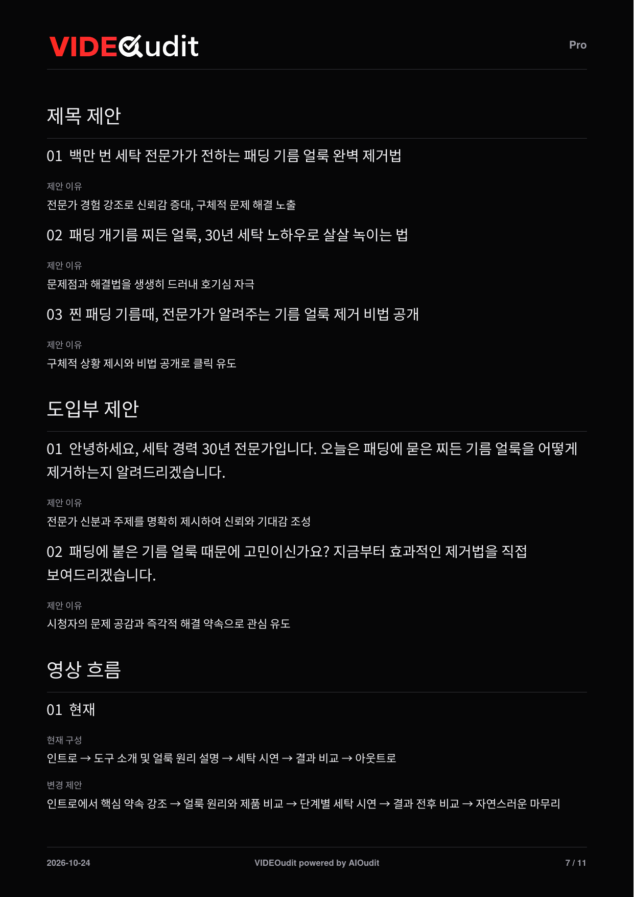
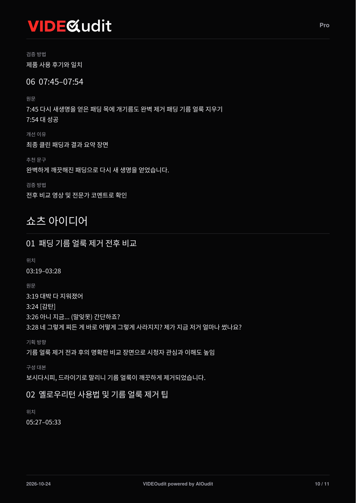

VIDEO CONTENT · FROM REVIEW TO EDIT
VIDEOudit
진단에서 편집까지.
다음 수정이 보이게.
URL 하나로 AI가 먼저 읽는 글자 층을 확인하고, 대본·자막으로 더 깊게 진단합니다. 썸네일, 제목·도입부, 시간대별 수정안과 쇼츠 아이디어를 다음 제작에 활용하세요.
01 / AI View
주소 하나로,
AI가 읽는 내 영상.
AI 검색은 영상을 보기 전에 글자부터 읽습니다. 영상 주소만 넣으면 AI가 먼저 읽는 글자 층과 영상에서만 말한 내용을 비교해 보여줍니다.
- 01
AI가 먼저 읽는 글자
제목, 설명 첫 줄, 챕터, 태그, 댓글처럼 AI 검색이 영상보다 먼저 읽는 것을 그대로 보여주고 YouTube 공개 수치도 함께 표시합니다.
- 02
영상에서만 말한 것
자막이 없어도 AI가 1시간 이하 공개 영상을 직접 듣고, 글자 층에 없는 사실과 조건을 찾아냅니다.
- 03
지금 고칠 것
제목, 설명 첫 줄, 챕터 초안을 복사해 바로 쓰고, 같은 자료로 영상 진단을 이어갑니다.

운영 중인 서비스 화면(2026년 10월) · 계정 표시는 예시입니다. 화면을 누르면 확대해서 볼 수 있습니다.
02 / URL로 분석
대본과 자막으로,
더 깊게 진단합니다.
AI View에서 이어오거나 영상 주소를 넣고, 확보한 대본·자막을 바탕으로 Basic 또는 Pro 진단을 실행합니다.
- 01
영상 정보 확인
주소를 넣으면 제목과 채널을 먼저 확인합니다. 이 단계는 아직 진단 결과가 아닙니다.
- 02
자막 가져오기
데스크톱 Chrome의 VIDEOudit 확장으로 선택한 영상의 자막만 가져오거나, 자막 파일·대본을 직접 넣습니다. 자막 가져오기는 크레딧을 사용하지 않습니다.
- 03
진단 실행
내용 분류를 확인하고 진단을 실행합니다. Pro는 경쟁 썸네일 비교, 구간별 처방 전체, 제목·오프닝 복수 대안을 더합니다.

운영 중인 서비스 화면(2026년 10월) · 계정 표시는 예시입니다. 화면을 누르면 확대해서 볼 수 있습니다.
03 / 결과 확인에서 실행까지
결과를 보고,
바로 다음 컷을 준비하세요.
공개 영상을 공개 자막으로 Pro 진단한 실제 보고서입니다. 썸네일부터 대본 수정, 쇼츠 기획까지 항목별로 살펴보세요.
EDIT WITH CONTEXT
몇 분 몇 초를,
어떻게 바꿀지.
원문의 시간대를 짚고, 개선 이유와 추천 문구, 검증 방법을 함께 제공합니다.
- 타임스탬프로 위치 찾기
- 샘플의 00:46–00:59, 01:42–01:50처럼 수정할 구간을 원문 시간과 연결합니다.
- 원문과 추천 문구
- 여러 줄로 나뉜 대사의 핵심을 더 명확한 한 문장으로 정리합니다.
- 검증 방법
- 추천 문구가 사실과 맞는지 무엇으로 확인할지 함께 적습니다.
제공된 대본을 바탕으로 한 편집 제안입니다. 원본 영상·음성의 직접 평가나 실제 시청 성과 측정과는 구분됩니다.
PDF 8쪽에서 보기
실제 Pro 보고서 원본 페이지 · 확대하면 세부 내용을 읽을 수 있습니다.
THUMBNAIL CHECK
작은 화면에서도,
한눈에 읽히는지.
썸네일 이미지를 분석해 주제 전달, 글자 가독성, 개선할 점을 정리합니다. 이미지 전송에 동의한 경우에만 실행합니다.
- 이미지에서 확인한 점
- 샘플은 전후 비교와 굵은 글자는 강점으로, 배경과 겹치는 노란 글자는 개선점으로 짚었습니다.
- 관련 영상과 비교
- Pro는 같은 주제의 참고 영상 썸네일과 나란히 비교합니다.
- 개선 참고 점수
- 썸네일마다 개선 참고 점수를 함께 표시합니다.
썸네일 점수는 개선 참고치이며 실제 클릭률이나 노출을 보장하지 않습니다.
PDF 2쪽에서 보기
실제 Pro 보고서 원본 페이지 · 확대하면 세부 내용을 읽을 수 있습니다.
TITLE & OPENING
제목과 첫 문장,
여러 대안으로.
영상 내용에 맞는 제목 후보와 도입부 문장을 제안 이유와 함께 제공합니다.
- 제목 제안
- 샘플은 전문가 경험, 문제와 해결, 비법 공개처럼 방향이 다른 제목 3개를 제안합니다.
- 도입부 제안
- 첫 몇 초에 누가 무엇을 보여줄지 약속하는 문장을 제안합니다.
- 영상 흐름
- 현재 구성과 변경 제안을 나란히 보여줍니다.
제목·도입부 복수 대안은 Pro에서 제공합니다.
PDF 7쪽에서 보기
실제 Pro 보고서 원본 페이지 · 확대하면 세부 내용을 읽을 수 있습니다.
NEXT CUT
본편에서,
쇼츠로 이어질 장면.
본편 안에서 짧게 잘라 쓸 만한 구간을 위치와 함께 찾고, 기획 방향과 구성 대본을 제안합니다.
- 위치
- 샘플은 03:19–03:28 전후 비교 장면을 첫 번째 쇼츠 후보로 골랐습니다.
- 기획 방향
- 이 장면이 왜 짧은 영상에 맞는지 설명합니다.
- 구성 대본
- 촬영·편집에 바로 쓸 수 있는 짧은 대본을 함께 제공합니다.
쇼츠 아이디어는 본편 대본을 바탕으로 한 기획 제안입니다.
PDF 10쪽에서 보기
실제 Pro 보고서 원본 페이지 · 확대하면 세부 내용을 읽을 수 있습니다.
보고서 전체를 읽어보세요.
VIDEOudit Pro 샘플 · 11쪽 · PDF 2.0 MB
샘플은 2026년 10월 24일 공개 유튜브 영상(세탁설 setaksul)을 공개 자막으로 Pro 진단한 실제 보고서입니다. 결과는 진단 대상과 확보된 자료에 따라 달라집니다.
Your next step